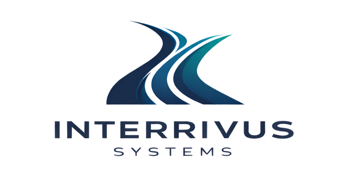
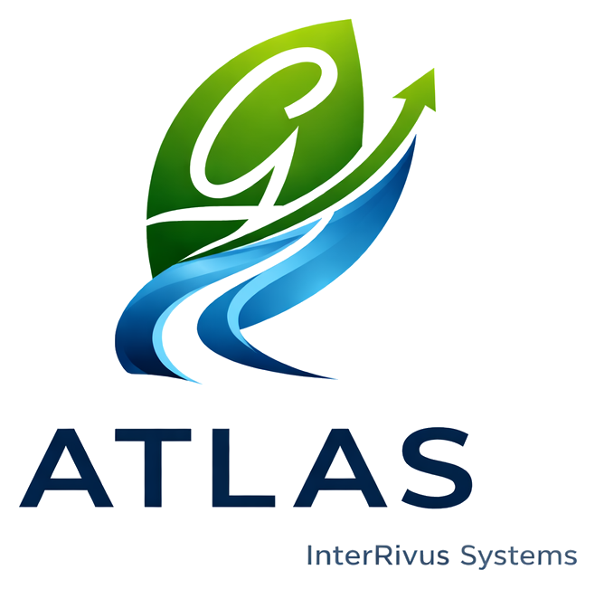

InterRivus Systems began with a simple idea conceived in Düsseldorf, Germany, overlooking the Rhine.
The name InterRivus comes from Latin roots meaning "between rivers."
It represents the convergence of separate streams into something more powerful.
That symbolism carried a personal meaning as well.
The names Beckham and Brooks both originate from words connected to streams and waterways. Those two streams of inspiration mirrored the larger concept behind InterRivus: combining ideas, data, and systems into one unified flow.
From that foundation, Atlas was built — an operational intelligence platform designed to bring structure, logic, and strategy to complex businesses.
